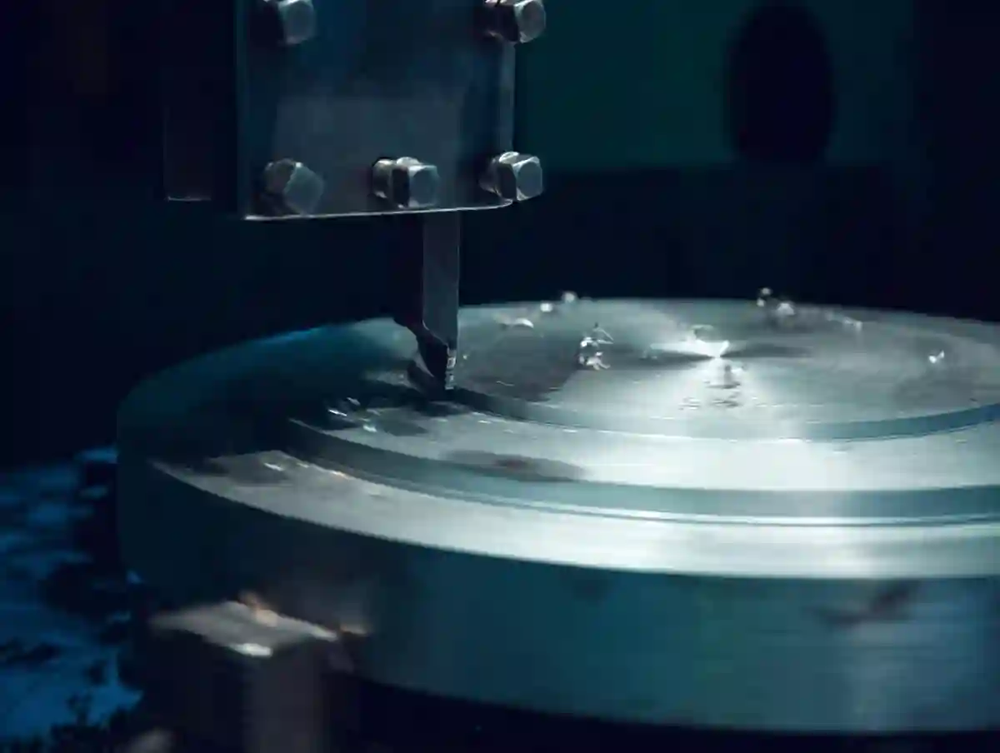

Talaşlı İmalatta Yüzey Kalitesi: Ra, Pürüzlülük ve CNC
Talaşlı imalatta yüzey kalitesi işlevsel performansın sessiz belirleyicisidir. Bir yüzeyin yalnızca “parlak” görünmesi yetmez; temas eden parçalar arasındaki sürtünme, sızdırmazlık ve kaplama tutunması gibi kritik sonuçlar çoğu zaman yüzey pürüzlülüğü ile şekillenir. Bu noktada “ra değeri nedir?” sorusu devreye girer: Ra, pürüzlülüğün ortalama seviyesini ifade eder ve doğru okunduğunda cnc yüzey kalitesi hedefinin sayısal dilidir. Ancak tek başına Ra, iz yönü ve dalgalılık gibi etkileri tam anlatmayabilir; bu yüzden yüzey düzgünlüğü ve ölçüm şartları birlikte düşünülmelidir. Özellikle sızdırmazlık hatları, yataklama bölgeleri ve pres geçmeler gibi fonksiyonel yüzeyler için hedef değerler süreçle beraber tanımlanmalıdır.
Üretimde sürdürülebilir kalite; doğru takım geometrisi, stabil kesme koşulları, uygun bağlama rijitliği ve etkin talaş tahliyesiyle başlar. Titreşim (chatter) oluştuğunda yüzeyde periyodik izler belirir ve parça “ölçüde” olsa bile montajda problem çıkarabilir. Bu nedenle yüzey hedefi, operasyon sırası ve ara kontrollerle desteklenmelidir. Temaslı profilometre ölçümleriyle değerlerin izlenmesi, takım aşınmasının yönetilmesi ve kritik yüzeylerin raporlanması; hem fireyi azaltır hem de teslimat tutarlılığını artırır. Sonuçta amaç, yüzeyi şansa bırakmadan tekrarlanabilir bir proses çıktısı hâline getirmektir.
Talaşlı İmalatta Yüzey Kalitesi “görünüş” Değil, Performanstır
Bir parçayı elinize aldığınızda parlak ve “pürüzsüz” görünmesi kolay aldatır. Üretimde asıl mesele, yüzeyin fonksiyon sırasında nasıl davrandığıdır. talaşlı imalatta yüzey kalitesi; sürtünme, aşınma, sızdırmazlık, kaplama tutunması ve montaj davranışı gibi sonuçları belirleyen bir “tasarım parametresi”dir.
Talaşlı imalatta yüzey kalitesi, işlenmiş yüzeyin pürüzlülük/iz yönü/dalgalılık gibi topografik özelliklerinin; parçanın sızdırmazlık, yorulma, kaplama ve çalışma ömrü gereksinimlerini karşılayacak düzeyde kontrol edilmesidir. Teknik resimde yüzey işleme sembolleri ve pürüzlülük sınıfları, şu modülde standarda uygun biçimde gösterilir: Ölçülendirme ve Yüzey İşlemleri (MEB).

“Yüzey Pürüzlülüğü” ile “Yüzey Düzgünlüğü” aynı şey değildir
Sahada sık karıştırılan iki kavram var: yüzey pürüzlülüğü ve yüzey düzgünlüğü. Pürüzlülük, mikro ölçekteki tepe-çukur yapıyı ifade eder; düzgünlük ise daha çok form/flatness gibi makro geometrik davranışlara yaklaşır. Bir yüzeyin Ra değeri düşük olabilir ama bağlama kaynaklı form hatası nedeniyle “düzgün” olmayabilir; ya da tam tersi.
Bu ayrım kritik; çünkü talaşlı imalatta yüzey kalitesi sadece tek bir sayıya indirgenemez. Teknik resimde pürüzlülük sembolüyle istenen değer ile, geometrik toleransla istenen form davranışı birlikte düşünülmelidir. MEB’in yüzey kaliteleri ve sembol gösterimleriyle ilgili modülünde bu standartlaşma ve Ra sınıfları açık biçimde anlatılır.
Ra Değeri Nedir? Nerede İşe Yarar, Nerede Yetersiz Kalır?
Ra değeri nedir? Ra, yüzey profilinin ortalama çizgisine göre mutlak sapmalarının aritmetik ortalamasıdır; en yaygın pürüzlülük parametresidir.
Ra pratikte “genel pürüzlülük seviyesini” hızlı anlatır. Ancak tek başına her şeyi yakalamaz: iz yönü, belirli tepe-çukur dağılımı, sızdırmazlık çizgisi gibi konularda ek parametreler (Rz, Rt vb.) gerekebilir. ITÜ’nün yüzey metrolojisi ders notlarında farklı parametrelerin (Rz, Rt vb.) neyi temsil ettiği özetlenir.
Fonksiyonel Yüzeyler: Neden “her yüzey aynı Ra” Değildir?
Üretimde “her yere Ra 1.6 ver geç” yaklaşımı maliyeti şişirir, teslim süresini uzatır ve bazen performansı da bozabilir. Çünkü fonksiyonel yüzeyler farklı risk taşır:
- Yataklama/sürgü yüzeyleri: sürtünme-aşınma dengesi
- Sızdırmazlık yüzeyleri: mikro kaçak yolları
- Kaplama yapılacak yüzeyler: tutunma ve yüzey hazırlığı
- Pres geçme/bağlantı yüzeyleri: gerçek temas alanı ve montaj tekrarlanabilirliği
Bu yüzden talaşlı imalatta yüzey kalitesi istenirken “yüzeyin görevi” cümleyle tanımlanmalı; sonra pürüzlülük parametresi ve ölçüm yöntemi seçilmelidir.
AYMAKSAN Üretim Yaklaşımı: Yüzey Kalitesi Baştan Planlanır
AYMAKSAN’da yüzey hedefi, üretimin sonunda “ölçeriz bakarız” diye bırakılmaz; operasyon sırası, takım seçimi, bağlama kurgusu ve kontrol planıyla birlikte tasarlanır. Pratikte, toleranslı parçalarda yüzey hedefi; takım aşınması ve bağlama rijitliği ile birlikte değerlendirilir. Bu bakış açısı, ölçü-tolerans ile yüzey davranışının birlikte ele alındığı teknik içeriklerle de uyumludur: Talaşlı İmalat Blog sayfası içinde tolerans ve kalite kontrol yazıları, yüzey kalitesi hedeflemesine doğrudan bağlanır.
Cnc Yüzey Kalitesi Hangi Değişkenlerle Belirlenir?
Cnc yüzey kalitesi; tezgâhın “CNC” olmasından çok, kesme koşullarının ve sistem rijitliğinin doğru seçilmesinden etkilenir. Aynı tezgâhta bile, takım-parametre-bağlama değişince talaşlı imalatta yüzey kalitesi dramatik şekilde değişebilir.
Tolerans hedefi daraldıkça, talaşlı imalatta yüzey kalitesi kararları da aynı anda daha kritik hâle gelir; bunun temelini şu rehberde detaylandırıyoruz: Talaşlı İmalatta Tolerans ve Ölçü Hassasiyeti.
Yüzey Dokusu ve İz Yönü: Pürüzlülük’ten Fazlası
Üretimde çoğu tartışma Ra değerine kilitlense de, yüzeyin gerçek davranışını belirleyen şey yalnızca sayısal seviye değil; iz yönü, doku düzeni ve mikro-topografyanın sürekliliğidir. talaşlı imalatta yüzey kalitesi hedeflenirken, yüzey izlerinin çalışma yönüne göre nasıl konumlandığı mutlaka düşünülmelidir. Örneğin frezelenmiş düz bir yüzeyde izler sızdırmazlık hattına paralel kalırsa, Ra düşük olsa bile mikro kaçak yolları oluşabilir; çünkü tepe-çukur dizilimi “kanal” gibi davranır.
Doku, kullanılan operasyonla doğrudan şekillenir. Tornalamada izler genellikle çevresel bir desen oluşturur; frezelemede ise ilerleme yönüne bağlı daha belirgin “diş izi” görülebilir. Bu yüzden aynı Ra, farklı operasyonlarda farklı temas alanı üretir. Burada kritik nokta, istenen performansa göre “hangi operasyonun hangi dokuyu verdiği”ni bilmek ve bunu proses planına gömmektir. talaşlı imalatta yüzey kalitesi açısından, takım ucu geometrisi (burun yarıçapı, talaş kırıcı formu) izlerin keskinliğini ve sürekliliğini belirler; dolayısıyla yalnızca hız-ilerleme değil, uç seçimi de yüzey stratejisinin parçasıdır.
Özellikle ince cidarlı parçalar ve uzun çıkıntılı takım kullanımı, yüzey izini titreşime açık hâle getirir. Titreşimde oluşan periyodik dalga izleri, “pürüzlülük” gibi görünse de çoğu zaman dinamik stabilite problemidir. Bu nedenle yüzey hedefi koyarken, sadece ölçüm parametresi değil; bağlama rijitliği, takım boyu ve kesme kuvvetlerinin yönü gibi sistem faktörleri de birlikte değerlendirilmelidir. Böyle kurulduğunda talaşlı imalatta yüzey kalitesi bir “son kontrol sonucu” olmaktan çıkıp, kontrol edilebilir bir proses çıktısına dönüşür.
İlerleme, Devir, Talaş Kalınlığı: Yüzey İzini Kim Çizer?
Frezeleme ve tornalamada ilerleme arttıkça yüzey izleri büyür; iz, pürüzlülük profilinin temel bileşeni hâline gelir. Bu, “daha hızlı üretim” ile “daha iyi yüzey” arasında çoğu zaman bir gerilim yaratır. Burada kilit olan; işin fonksiyonuna göre hedefi belirlemek ve parametreyi buna göre ayarlamaktır.
Yüzeyi bozan 6 klasik neden:
1. Aşınmış kesici uç
2. Yetersiz rijitlik / titreşim (chatter)
3. Uygunsuz ilerleme-devir oranı
4. Yanlış uç burun yarıçapı / geometri
5. Soğutma-yağlama stratejisi hatası
6. Talaş tahliyesi problemi (özellikle kanal/cep)
Titreşim (Chatter) Yüzeyi Neden “bir anda” Bozar?
Chatter oluştuğunda yüzeyde periyodik dalga izleri belirir; Ra değeri bazen “ortalama” kaldığı için gerçek problem gözden kaçabilir. Bu, yüzey düzgünlüğü gibi algılanır ama kök neden çoğu zaman dinamik stabilitedir. Bu yüzden talaşlı imalatta yüzey kalitesi için yalnızca ölçüm değil, iz analizi de (iz yönü, periyodiklik) gerekir.
Malzeme Cinsi Yüzey Pürüzlülüğünü Nasıl Değiştirir?
Aynı Ra hedefi; Alüminyum, paslanmaz, 42CrMo4, döküm veya polimerde aynı “kolaylıkta” elde edilmez. Yapışma eğilimi yüksek malzemelerde BUE (built-up edge) yüzeyi bozar; sert malzemelerde takım aşınması hızlanır. Bu nedenle yüzey pürüzlülüğü hedefi belirlenirken malzeme, takım kaplaması ve soğutma birlikte seçilmelidir.
“Yüzey İşleme Sembolleri” ve Standart Dil
Teknik resimde yüzey durumları sembollerle belirtilir; bu dilin standartlaşması, tedarikçi-müşteri arasında tartışmayı azaltır. MEB modülünde ISO/TSE standartları ve pürüzlülük sembollerinin ne anlattığı net bir şekilde işlenir. Bu standardizasyon, talaşlı imalatta yüzey kalitesi talebinin “yorumlanabilir” olmasını sağlar.
Yüzey hedefi, tolerans yönetiminden ayrı düşünülemez. Özellikle dar toleranslı işlerde “ölçü tutarken yüzeyi bozmamak” tipik bir dengedir. Talaşlı İmalatta Tolerans ve Ölçü Hassasiyeti yazımızda bu bağlam için tolerans perspektifine değinilmiştir.
Yüzey Pürüzlülüğü Ölçümü: Ra Tek Başına Yeter mi?
Üretimde karar, “ölçebildiğiniz kadar” nettir. talaşlı imalatta yüzey kalitesi yönetimi için ölçüm yöntemini ve raporlama dilini baştan belirlemek gerekir. Aksi hâlde aynı yüzey, farklı cihaz/ayar ile farklı raporlanır ve tartışma çıkar.
Ölçüm yöntemi, raporlama disiplini ve izlenebilirlik olmadan cnc yüzey kalitesi sürdürülebilir olmaz; süreç bakışını şu içerikte genişlettik: CNC Üretimde Kalite Kontrol Süreçleri.
Ra dışında Rz/Rt gibi parametrelerin neyi temsil ettiğini ve ölçüm mantığını özetleyen kaynak: İTÜ – Yüzey Metrolojisi (Bölüm 8). Profilometre prensibi ve Ra tanımı için uygulamalı deney föyü: Yüzey Pürüzlülük Ölçümü Deney Föyü (Atauni).
Ölçüm Tekrarlanabilirliği: Aynı Yüzeyi Neden Farklı Okuruz?
Sahada en çok zaman kaybettiren senaryo şudur: Parça aynı, yüzey aynı; ama farklı ölçümlerde farklı sonuçlar çıkar. Bunun önemli bir kısmı, ölçüm ayarlarının ve yönteminin standardize edilmemesinden kaynaklanır. talaşlı imalatta yüzey kalitesi doğrulaması yapılırken; ölçüm yönü, örnekleme uzunluğu, filtreleme yaklaşımı ve kaç noktadan ölçüm alınacağı netleşmezse sonuçlar “karşılaştırılamaz” hâle gelir.
Ra ölçümü için temaslı profilometre kullanıldığında, probun iz yönüne göre konumu sonucu etkiler. Frezelenmiş yüzeyde izlere paralel tarama, izlerin “içinden akarak” daha düşük değer gösterebilir; izlere dik tarama ise daha gerçekçi bir üst sınır verir. Bu yüzden kritik yüzeylerde “en kötü senaryoyu” yakalayan tarama yönü seçilmelidir. Bu yaklaşım, özellikle kaplama öncesi yüzey hazırlığında veya sızdırmazlık yüzeylerinde gereksiz sürprizleri azaltır.
Bir diğer konu, ölçümün lokal karakteridir. Yüzeyde küçük bir bölgede talaş sıkışması, BUE oluşumu veya kısa süreli titreşim yaşandıysa, sadece o bölgede değer bozulur. Tek noktadan ölçmek, iyi çıkan bir bölgeyi seçip hatayı maskeleme riskini taşır. Bu nedenle talaşlı imalatta yüzey kalitesi için pratik kural: kritik yüzeyde en az 3 ölçüm noktası, mümkünse farklı doğrultular ve raporda ölçüm şartlarının açıkça yazılmasıdır. Böylece hem müşteri tarafında hem üretici tarafında “aynı dil” oluşur ve kabul/red kararları hızlanır.
Temaslı Profilometre Nasıl Çalışır?
Atatürk Üniversitesi’nin deney föyünde, mekanik profilometrelerin elmas uçla yüzey profilini tarayarak sinyali elektriksel veriye dönüştürdüğü; buradan Ra ve diğer değerlerin üretildiği anlatılır. Bu bilgi sahada şunu hatırlatır: Ölçüm ucu, iz yönü ve tarama hattı seçimi sonucu değiştirir.
Örnekleme Uzunluğu, Filtreleme ve Karşılaştırma Hataları
ITÜ yüzey metrolojisi notları, ölçüm yaklaşımında doğrudan ölçüm ve değerlendirme mantığını özetler. Sahada sık görülen hata: iki tarafın farklı “cut-off / değerlendirme uzunluğu” ile ölçmesi. Sonuç: biri “Ra 0.8”, diğeri “Ra 1.2” görür. Bu yüzden rapora cihaz tipi, ölçüm uzunluğu, filtre standardı gibi bilgi eklemek talaşlı imalatta yüzey kalitesi için zorunlu bir hijyendir.
Ra, Rz, Rt… Hangisini Ne Zaman İstemeli?
- Genel işleme kalitesi / “ortalama” kontrol: yüzey pürüzlülüğü için Ra
- Tepe-çukur uç değer hassasiyeti (sızdırmazlık, kaplama öncesi): Rz / Rt
- Yatak yüzeyleri (yağ filmi davranışı): iz yönü + Ra birlikte
MEB dokümanında Ra yanında Ry, Rz, Rp gibi parametrelerin de sembolle gösterilebildiği belirtilir. ITÜ notları da Rz/Rt gibi parametrelerin neyi temsil ettiğine değinir.
Fonksiyonel Yüzeyler için “ölçüm stratejisi” Örnekleri
- Sızdırmazlık yüzeyi: çevresel yönde tarama + birden çok noktadan ölçüm
- Freze düzlem: iz yönüne dik tarama (en kötü senaryoyu görür)
- Tornalanmış mil: eksene paralel ve çevresel tarama karşılaştırması
Burada amaç “tek ölçümle hüküm vermemek”tir. Çünkü talaşlı imalatta yüzey kalitesi çoğu zaman lokal bir problemdir: küçük bir titreşim bandı tüm parçayı reddettirebilir.
Ölçüm, kalite kontrol prosesinin bir parçasıdır; raporlama ve izlenebilirlik ile anlam kazanır. Bu çerçevede:
CNC Üretimde Kalite Kontrol yazısı, ölçüm disiplininin üretim kalitesiyle nasıl bağlandığını genişletir.
Yüzey Düzgünlüğü ve Montaj Davranışı: Görünmeyen Maliyetler
Parça “ölçüde” olsa bile montajda sorun çıkarıyorsa, çoğu zaman kök sebep yüzey davranışıdır. talaşlı imalatta yüzey kalitesi burada “çalışma yüzeyi” gerçeğiyle karşımıza çıkar.
Kritik yüzeyler için profilometre ölçümü ve raporlama dahil tüm yaklaşımı hizmet tarafında burada özetliyoruz: Kalite Kontrol ve Ölçüm. Bu yazı, yüzey performansını “üretim kararı” olarak ele alan rehber serimizin bir parçasıdır: Talaşlı İmalat Blog.
Kritik Uygulamalar: Sızdırmazlık, Yataklama ve Kaplama Öncesi Yüzey Hedefi
Her yüzeyi aynı hedefe zorlamak maliyeti yükseltir; doğru yaklaşım, kritik yüzeyi tanımlayıp hedefi fonksiyona göre seçmektir. Sızdırmazlık yüzeylerinde amaç mikro kaçak yollarını minimize etmektir; burada talaşlı imalatta yüzey kalitesi iz yönü ve tepe-çukur sürekliliği üzerinden okunmalıdır. Yataklama yüzeylerinde ise yağ filmi davranışı devreye girer; aşırı “ayna” yüzey, bazı eşleşmelerde yapışma/sürtünme riskini artırabilir. Dolayısıyla hedef, yalnızca düşük Ra değil; stabil ve tekrarlanabilir doku üretmektir.
Kaplama veya yapıştırma öncesi yüzeylerde “tutunma” konusu belirleyicidir. Fazla pürüzlü yüzey mekanik kilitleme sağlayabilir; fakat tepe uçlarında kaplama incelmesi ve erken aşınma riski doğurabilir. Çok düşük pürüzlülükte ise tutunma zayıflayabilir. Bu nedenle kaplama prosesi belli değilse, yüzeyi gereksiz yere zorlamak yerine proses sahibinden hedef bandı almak daha akıllıcadır. talaşlı imalatta yüzey kalitesi burada bir optimizasyon problemidir: performans, maliyet ve üretilebilirlik birlikte dengelenir.
Son olarak, montaj davranışı çoğu zaman yüzeyle birlikte tolerans yönetimine bağlanır. Pres geçmelerde gerçek temas alanı; yüzey dokusuyla ve ölçü dağılımıyla birlikte çalışır. Bu yüzden kalite yaklaşımı “ölçü tamam, bitti” değildir; kritik yüzeylerde hedefin yazılması, ölçümün standardize edilmesi ve prosesin titreşimsiz/stabil kurulması gerekir. Böyle ele alındığında talaşlı imalatta yüzey kalitesi hem teknik riskleri düşürür hem de teklif aşamasında doğru proses seçimiyle maliyeti kontrol altında tutar.
Sızdırmazlık Yüzeylerinde Mikro Kaçak Yolları
Conta veya metal-metal sızdırmazlıkta, tepe-çukur yapısı mikro kaçak kanalları oluşturabilir. Ra düşük olsa bile, iz yönü sızdırmazlık hattına paralelse kaçak riski artar. Bu nedenle fonksiyonel yüzeyler için “iz yönü” şartı da teknik resimde belirtilmelidir.
Kaplama ve Yapıştırma Süreçlerinde Yüzey Pürüzlülüğü
Kaplamada tutunma, yüzey enerjisi ve pürüzlülükle ilişkilidir. Aşırı pürüzlü yüzey kaplamayı “kilitleyebilir” ama aynı zamanda tepe uçlarında incelme yapabilir; aşırı pürüzsüz yüzeyde ise yapışma düşebilir. Burada hedef, prosese göre optimum pürüzlülük bandıdır. İşte bu yüzden talaşlı imalatta yüzey kalitesi “ne kadar düşük o kadar iyi” değildir.
Aşınma, Sürtünme ve Yağ Filmi: Yatak Yüzeyleri
Yataklamada çok düşük Ra her zaman iyi sonuç vermez. Yağ filmi için mikro “taşıyıcı” yüzey dokusu gerekir; aksi halde yapışma/sürtünme artabilir. Burada mühendislik kararı: hedef Ra + iz yönü + malzeme çifti + yağlama.
Yüzey kalitesi sınıfları/semboller ve Ra gösterimi;
- Teknik resimde yüzey kalite sınıfları ve Ra gösterimi, ISO/TSE referanslı olarak şu dokümanda örneklenir: Ölçülendirme ve Yüzey İşlemleri (MEB).
- Pürüzlülük parametreleri (Rz, Rt vb.) ve ölçüm yaklaşımı için: İTÜ – Yüzey Metrolojisi (Bölüm 8).
- Profilometre prensibi ve Ra tanımı için: Yüzey Pürüzlülük Ölçümü Deney Föyü (Atauni).
Yüzey hedefini garanti altına almanın en kısa yolu; ölçüm altyapısını doğru kullanmaktır. AYMAKSAN’ın hizmet yaklaşımında bu, kalite kontrol kabiliyetiyle birlikte sunulur: Kalite Kontrol ve Ölçüm Hizmetleri.
Uygulamalı Rehber: Hedef Yüzey Kalitesi Nasıl İstenir, Nasıl Doğrulanır?
Satın alma ve mühendislik ekiplerinin ortak dili: net şartname. talaşlı imalatta yüzey kalitesi talebi, “Ra 1.6” demekten ibaret bırakılırsa; ölçüm koşulu, iz yönü ve kritik yüzey tanımı boşlukta kalır.
Şartname Şablonu
- “Kritik sızdırmazlık yüzeyi: yüzey pürüzlülüğü Ra ≤ X µm, iz yönü sızdırmazlık hattına dik; ölçüm temaslı profilometre ile, aynı yüzeyde en az 3 noktadan.”
- “Yatak yüzeyi: cnc yüzey kalitesi hedefi Ra ≤ X µm; iz yönü eksene paralel; Rz raporlanacak.”
- “Kaplama öncesi yüzey: yüzey düzgünlüğü toleransı + Ra aralığı + yüzey temizliği şartı.”
Bu şablonlar, MEB dokümanındaki sembol ve gösterim disiplinine de uyumlu düşünülmelidir.
Proses Tarafında 8 Pratik İyileştirme Hamlesi
- Uç geometri/burun yarıçapını yüzey hedefiyle eşleştir
- İlerleme-devir oranını iz adımını küçültecek şekilde ayarla
- Bağlama rijitliğini artır (özellikle ince cidar)
- Takım çıkıntısını kısalt, titreşim riskini azalt
- Soğutmayı talaş tahliyesini destekleyecek şekilde konumlandır
- Kaba-finiş operasyonunu ayır; finişte stabil kesme uygula
- Takım aşınma limitini tanımla; “son parçada bozulma”yı engelle
- Ölçüm koşulunu standardize et (aynı cihaz/aynı ayar/aynı tarama yönü)
Bu adımların amacı: talaşlı imalatta yüzey kalitesi değerini şans işi olmaktan çıkarıp tekrarlanabilirliğe taşımaktır.
Ra Değeri Nedir Sorusunu “doğru yerde” Sormak
Ra değeri nedir sorusunun doğru devamı şudur: “Hangi yüzey için, hangi fonksiyon için, hangi ölçüm standardıyla?” Çünkü fonksiyonel yüzeyler kavramı olmadan Ra, tek başına hedef seçtirmez.
Son Kontrol Yerine Süreç Kontrolü
Yüzeyi sadece finalde ölçmek, hatayı “geç yakalamak” demektir. En iyi yaklaşım; kritik operasyon sonrası ara kontrol + trend takibi + takım aşınma yönetimidir. Bu nedenle talaşlı imalatta yüzey kalitesi hedefi, proses planının içine gömülmelidir.
Bu yazıdaki kavramların üretim sahasına bağlandığı ana içerik merkezi: Talaşlı İmalat Blog sayfasıdır.